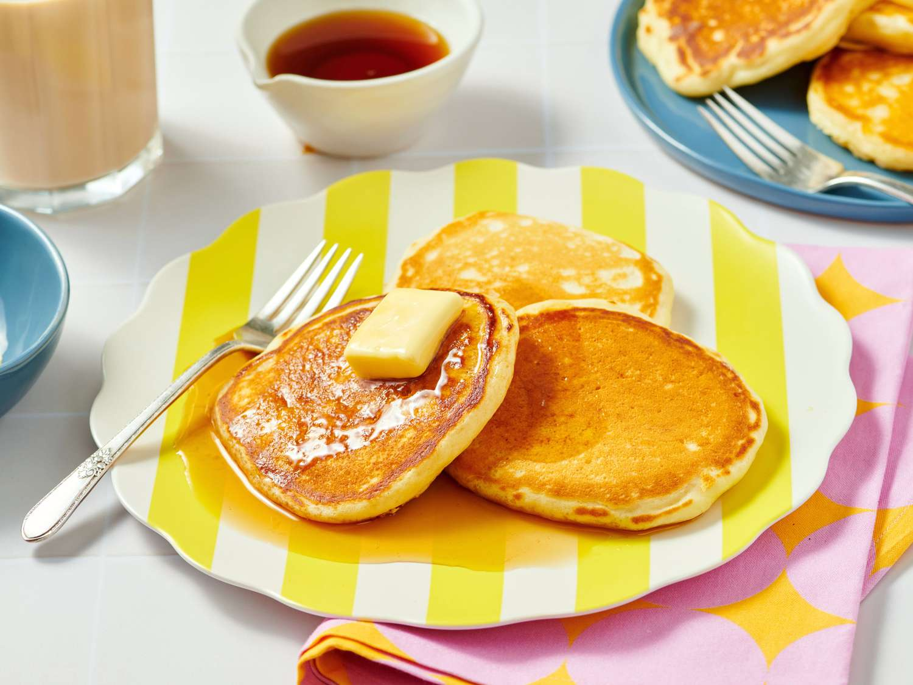

Featured Recipes
Explore my three favorite dishes below.
Pancakes

Soft and fluffy pancakes perfect for breakfast.
Fried Egg

A simple and delicious breakfast dish.
Banana Cue

A popular Filipino street food coated with caramelized sugar.
About This Website
This website contains three of my favorite recipes. Each recipe page includes a description, ingredients, and step-by-step instructions.